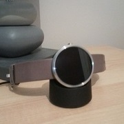

La moto 360
Le petit bijou de Motorola
Nous avons pu mettre la main dessus... elle est superbe ! Vous avez envie d'enrichir votre expérience android, cette montre est pour vous. Nous avons pu mettre la main dessus... elle est superbe ! Vous avez envie d'enrichir votre expérience android, cette montre est pour vous. Nous avons pu mettre la main dessus... elle est superbe ! Vous avez envie d'enrichir votre expérience android, cette montre est pour vous. Nous avons pu mettre la main dessus... elle est superbe ! Vous avez envie d'enrichir votre expérience android, cette montre est pour vous. Nous avons pu mettre la main dessus... elle est superbe ! Vous avez envie d'enrichir votre expérience android, cette montre est pour vous.